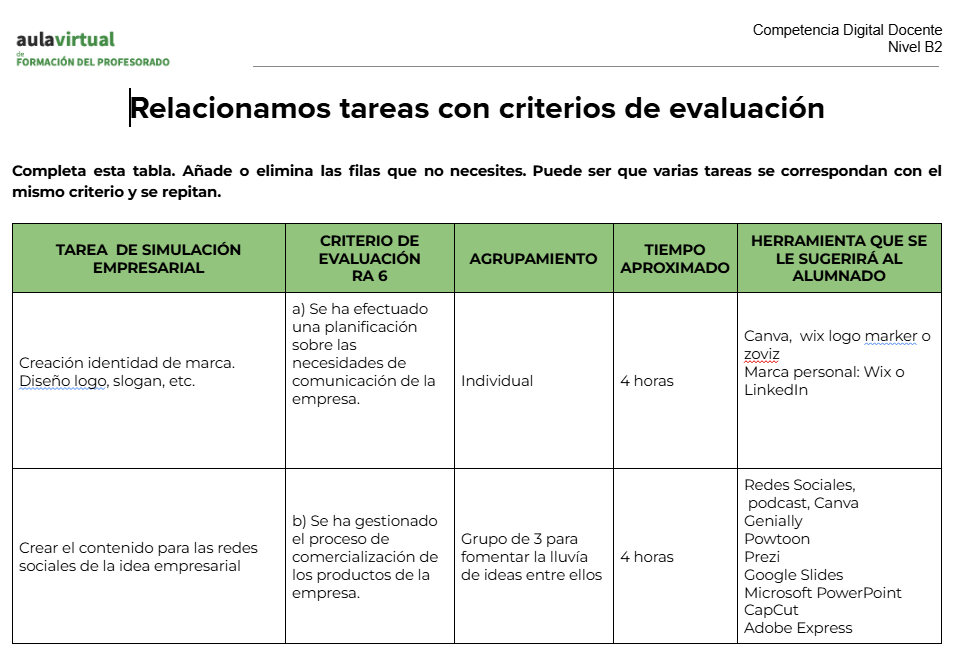

Criterios de Evaluación

Para ver el documento completo, visita el enlace.
Lanza tu Marca
1. Identificación del proyecto
Título: Diseño digital: “Lanza tu marca”
Nivel educativo: Ciclo Formativo de Grado Medio de Gestión Administrativa
Duración: 6 sesiones de 55 minutos
Áreas implicadas: Empresa en el Aula, Empresa y Administración, Digitalización
2. Descripción de la situación de aprendizaje
Este proyecto propone al alumnado el reto de crear y lanzar una marca sostenible mediante el diseño de una campaña de marketing digital.
El alumnado trabajará en equipo para desarrollar:
una identidad de marca,
un producto o servicio sostenible,
contenidos digitales,
y una presentación final.
Se trata de una propuesta basada en el aprendizaje basado en proyectos (ABP) y orientada a situaciones reales del entorno profesional.
3. Objetivos didácticos
Diseñar una marca con identidad propia.
Desarrollar una campaña de marketing digital.
Utilizar herramientas digitales de forma competente.
Trabajar de forma colaborativa.
Fomentar la creatividad y el pensamiento crítico.
Integrar la sostenibilidad en la toma de decisiones.
Mejorar la comunicación oral y digital.
4. Competencias clave
Competencia digital
Competencia emprendedora
Competencia personal, social y de aprender a aprender
Competencia en comunicación lingüística
Competencia ciudadana
5. Metodología
La metodología utilizada se basa en:
Aprendizaje Basado en Proyectos (ABP).
Trabajo cooperativo.
Aprendizaje significativo.
Uso de herramientas digitales.
Enfoque práctico y experiencial.
El alumnado es el protagonista de su aprendizaje, mientras el docente actúa como guía y facilitador.
6. Atención a la diversidad
Este proyecto sigue los principios del Diseño Universal para el Aprendizaje:
Múltiples formas de representación (textos, imágenes, vídeos).
Múltiples formas de expresión (oral, digital, visual).
Múltiples formas de implicación (trabajo en equipo, roles diferenciados).
Se adaptan las tareas según el nivel del alumnado y se ofrecen apoyos cuando es necesario.
7. Relación tareas – criterios de evaluación
Tarea
Criterios asociados
Diseño de marca
Creatividad, identidad visual, coherencia
Campaña digital
Comunicación, marketing, uso de herramientas digitales
Trabajo en equipo
Colaboración, organización, participación
Presentación final
Expresión oral, uso de herramientas digitales
8. Evaluación
La evaluación será:
continua,
formativa,
competencial.
Se utilizarán los siguientes instrumentos:
rúbrica de evaluación,
lista de cotejo,
diana de autoevaluación,
cuestionario digital.
9. Recursos y herramientas
Canva
Genially
Google Drive
Internet y bancos de imágenes libres
Recursos digitales educativos
10. Observaciones finales
Esta situación de aprendizaje está diseñada para acercar al alumnado a un contexto real de emprendimiento digital, fomentando la creatividad, la autonomía y la competencia digital.
El objetivo final es que el alumnado sea capaz de diseñar, desarrollar y comunicar una idea de negocio de forma profesional.